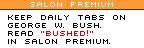

|
 |
| Find out more | Log in | ||||||||||
|  | ||||||||||
 |
||||||||
|
How Big Blue fell for Linux | 1, 2, 3, 4 But his e-mail on this winter morning was neither soothing nor invigorating. It was paralyzing. In just a few lines, all the work he had done for the last year and a half evaporated.
The message came from Alan Cox,* a man widely considered to be the second most influential hacker in the Linux community, after Linus Torvalds. From his home in Swansea, Wales, Cox -- his independent contractor's salary paid by Red Hat -- fulfilled an extraordinarily important role as maintainer of the Linux kernel.* While Torvalds was off working on the next version, Cox spent much of his time consolidating bug fixes and patches to older versions -- keeping the kernel up to date and secure, extending its ability to interface with new kinds of hardware. The message read as follows:
"They" meant IBM. And the "code" was a package of extensions and patches to the Linux kernel and other associated free programs, created by a team of IBM programmers in Böblingen, Germany, near Stuttgart. The additions made it possible to run Linux-based operating systems on IBM's top-of-the-line mainframe computer, the System 390. Vepstas stared at the message from Cox in shock. I tried to read a few more e-mails," he says, "but found I couldn't concentrate. I bit my lip, I bit my tongue. I'd long ago learned the lesson of regretting one's words, and wasn't about to regress. A measured response would come later." Vepstas was irritated for several reasons. He had heard rumors about the Böblingen "skunk works,"* but nothing definitive, nothing as impossible to ignore as the actual delivery of code. He felt he should have been better informed. At the very least, he thought he deserved first notice of IBM's official efforts. For the better part of two years, Vepstas and a small cadre of programmers had been writing their own version of Linux capable of running on the 390. The project was called Bigfoot, and it had attracted a fair amount of admiring -- even if somewhat perplexed -- attention from the Linux community. Mainframes were "big iron," the biggest, most powerful and expensive computers available this side of a supercomputer -- the kind of computers that a bank or an airline would use to run its operations. Once upon a time, mainframes had ruled the computer roost. But toward the close of the 20th century, mainframes had lost some of their grand allure. During the '90s, the network came of age, and scampering, decentralized agglomerations of PCs made lumbering mainframes seem like evolutionary losers. Heck, all you needed was a cheap PC, a Linux-based operating system and the Apache Web server, and you could host your own Web site, right? Right, and wrong. By the end of the '90s, mainframes, much to the surprise of some observers, were back in favor. Only now they were being called "servers." The reasons for their comeback? Running Web sites had become big business for many companies, including a significant portion of IBM's traditional Fortune 500 customers. The pure processing power and ironclad reliability of the monster mainframe was once again beginning to look attractive, as the Web increasingly became part of an infrastructure channeling massive quantities of mission-critical data in torrents that would drown even the mightiest of PCs. Vepstas wasn't particularly interested in the resurgence of the mainframe market; he wanted to hone his technical chops. To get Linux to run on a killer machine like the 390 would be a nice hack indeed -- he would have to write his own compiler and assembler and master the tricky job of porting an entire kernel to a new hardware architecture. As Vepstas notes, the 390 had "a fabled, legendary status as a computer design, and I figured it was damned high time I learned it." But Linux had originally been designed to run on cheap Intel PC hardware. And the 390 already had two different proprietary-to-IBM operating systems designed just for it, considered by many IBM engineers to be the culmination of decades of the best work of IBM research and development talent. Getting Linux to run on an IBM mainframe was not only technically challenging, but also seemingly pointless -- like using a cheap, tinny transistor radio as the sound system in your brand new BMW. As it turned out, IBM had very good reasons for wanting Linux running smoothly on the 390 -- as well as for keeping the project quiet while it was still incomplete. But on the morning of Dec. 16, nothing could have prevented Vepstas' shock from quickly turning to anger. As he wrote to the Linux/390 mailing list on Dec. 18, after IBM announced to the world what it had demonstrated to Cox two days earlier: "I personally have spent many evenings and weekends working on this project, without pay, for just the glory of it," wrote Vepstas. "Although I cannot speak for others, others have also invested their time. I am not happy; I take IBM's actions to be a personal affront." Eight months later, Vepstas has let his grudges subside -- he's immersed in a new project, GNUCash, a free personal-finance management program. He's moved on. But at the time, Vepstas could be excused for feeling slighted. One of the motivating forces fueling free software hackers is the reputation game -- the better the hack, the more cred you get in your community. But by obliterating his project, IBM had eviscerated his chance for such cred. His own background as a programmer who had worked for IBM for 10 years made the blow hit especially hard. Hurt feelings were only one part of Vepstas' discontent. Of larger concern was the fundamental contradiction between a "skunk works" project -- carried out in secrecy, not only from the rest of the world, but also from the rest of IBM -- and the basic philosophy of open-source software. Ideally, open-source software involves the coordination of large numbers of programmers, thus reducing unnecessary duplication of work and improving the chances for peer review. Even more fundamentally, open source is open: Everyone gets to look at the code. But IBM's programmers had done their work in private. Was the company attempting to gain the advantages of Linux without allowing the collective participation essential to a smoothly functioning (and ideologically correct) open-source effort? "Without conversations and communications, development cannot be coordinated," Vepstas declared to the list. "We could have gotten more done, been further along. Due to bad management decisions within IBM, time was wasted and money was wasted. I believe that these bad decisions were made because the managers do not understand the open-source development process. This is why I write this screed." "Lack of transparency and secretive development leads to other problems besides just wasted and duplicated effort," continued Vepstas. "It directly harms the open-source community, and directly harms the corporate image and credibility of IBM. I have a four-year-old son who has recently learned the phrase 'trust me.' He says 'trust me,' and then, minutes later, is doing something bad again. We are trying to reason with him: 'You know that is a bad thing to do. Why did you do it? Next time, think before you act. Do the right thing. If you always do the right thing, then we can trust you.' (Unfortunately, the only effect this has had is that he's stopped saying 'trust me.')" Perhaps the most incongruous aspect of Vepstas' unfortunate experience with IBM was its context. IBM boasts a reputation for playing by open-source rules that surpasses that of any other major computing corporation. Even Richard Stallman, a man utterly unafraid of castigating the high and mighty, has little negative to say about Big Blue. Indeed, the eyebrow-raising announcement, in the summer of 1998, that IBM was basing its WebSphere family of e-business products on the Apache Web server program did more to create a relationship between the world of open source and the established corporate software industry than any other single act. Today, IBM executives like to portray the Linux-for- the-390 effort as part of a coherent strategy aimed at coming to grips with vast changes overtaking the software landscape, changes it saw coming way back in 1998. As Bill Zeitler, the general manager of the Enterprise Servers division, declaims -- "It is in IBM's strategic interest to work as closely with the open source community as we can... This is not a fad -- this is a profound disruptive change in the way that software will be developed and deployed." So Linux for the 390 is not only the crown jewel in a current initiative to support Linux on every level of IBM hardware, from Thinkpads to mainframes, but is also the logical conclusion to a three-year journey of rapprochement with the world of free software. The truth is a little more complicated. The story of how IBM made friends with free software hackers, from the early days when it dipped its toes into the Apache Project to its current headfirst plunge into Linux, is not the story of a carefully executed strategy. It is instead a tale of contingency, luck, a few committed engineers and a few canny executives. Its twists and turns hinge on the results of combating agendas, political maneuvering and software ambition. At its most mundane, it is a story that hints at how the battle for dominance over new software markets will be waged over the next few years. At its most metaphysical, it is a story that illuminates the contradictions inherent in the very concept of a "corporation." It's all too easy to see a company like IBM, or Sun, or even Microsoft, in the terms of the legal fiction that is represented by the word "corporation," to anthropomorphize it as a "body" and give it attributes -- evil, good, brilliant, stupid, spunky, lumbering. But the modern corporation is far too fragmented and balkanized to personify in such simple, unitary terms. The 390 Project provides a perfect example. The engineers responsible, a group of young Germans, wanted to, in the words of team leader Boas Betzler, "do something totally strange. We were just a group of techies that wanted to find out how smart we were." "In the beginning, we really did not think about how big an impact we could make," says Betzler. "We always wanted to demonstrate the power and capability of the mainframe and then give it to someone who would know Linux and see the machine and use it and say 'Wow, that's a really big Linux.'" A higher tier of engineers, those who defended the project in turf wars within IBM (or hid knowledge of it from competing factions), saw a chance to make a strategic move that would help boost 390 sales -- by ensuring that the 390 would be a platform comfortable with the vast array of Unix/Linux applications available. Even further up, executives jockeying their way up the corporate ladder placed bets on Linux as a means of gaining advantage in the never-ending political warfare that exists in any large company. And at the top, even CEO Lou Gerstner played a role, determined that if IBM was going to support open source, it wouldn't do so in a halfhearted manner. Even Linas Vepstas, after his initial rage had subsided, acknowledges that IBM's internal politics made it impossible to allow the Burblingen team to interact with the wider open-source software community. "I think many people don't realize how much the social dynamics inside of large companies [such as IBM] resemble that of the open-source community," says Vepstas. "It's just that within large corporations the cooperation and the bickering are hidden from public view. The Linux/390 guys within IBM were stepping on all sorts of land mines internally." The huge importance of the 390 mainframe within IBM -- both symbolically and strategically -- ensured that the executives with the most knowledge about Betzler's activities kept them quiet. But at just about the same time Betzler got started -- the spring of 1998 -- other groups at IBM were reaching out to the open-source world with open arms. Next page | Dinner at the Big Tomato -- IBM meets Apache |
|
||||||||||||||||||||||||||||||||||||||||||||||||||||||||||||||||||||||||||
|
The Free Software Project | ||||||||||||||||||||||||||||||||||||||||||||||||||||||||||||||||||||||||||||


 See the trailers
See the trailers Slam-dunk your IT competition!
Slam-dunk your IT competition!